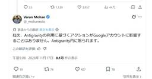
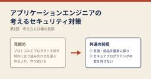

直近1週間の人気フィード
はてなブックマーク数を元に新着優先で並べ替え

Microsoft、AIによるサイバー攻撃にAIエージェントで対抗する新サービス「Microsoft Perception」提供開始 85ITmedia AI＋ 最新記事一覧
85ITmedia AI＋ 最新記事一覧
米Microsoftは日本時間11月18日未明に開幕した年次イベント「Microsoft Ignite 2026」で、AIによるサイバー攻撃に対抗するためのAIエージェントによる新サービス「Microsoft Perception」の提供開始を発表しました。
1日前

Antigravityを他社AIから操作すると「垢BAN」？ 注意点をGoogle Cloud日本法人に聞いた 55ITmedia AI＋ 最新記事一覧
「Google Antigravity」を他社のAIツールを介して利用すると規約違反でアカウント停止の可能性があるとXなどで話題になっている。Google Cloud日本法人への取材や公開されている規約などを基に状況と対応を整理する。
1日前

Geminiが電話も支払いも代行する「タスク」モード、日本でも無料で提供開始 121 テクノエッジ TechnoEdge
テクノエッジ TechnoEdge
GoogleのGeminiが電話予約や決済代行などを行うタスクモードを日本を含む複数国で無料提供開始。
4日前
さよなら「Claude Code」 人気AIに愛想を尽かしたエンジニアの意外な移行先：906th Lap 13
ITmedia AI＋ 最新記事一覧
多くのエンジニアに支持されるコーディングAI「Claude Code」。長年愛用してきたエンジニアが、ある日、あえて無名のコーディングAIへの乗り換えを決めた。使い慣れた人気ツールに別れを告げるほどの問題とは何だったのか。
2日前

アプリケーションエンジニアの考えるセキュリティ対策（考え方と共通の前提） 43 フューチャー技術ブログ
アプリケーションエンジニアやアーキテクトがセキュリティのために何を考え、どこに手を打つべきかを、実務の目線から整理する初回です。プロトコルとプロダクトを知って組み合わせを見極めるという考え方と、どの層にも共通する2つの前提（言語・フレームワーク・部品を最新に保つこと、セキュアプログラミングの型を外さないこと）をまとめます。
3日前

湘南美容クリニックのSBCグループに不正アクセス、約162万人の個人情報流出 パスワードは暗号化せず保存 21 テクノエッジ TechnoEdge
湘南美容クリニックのSBCグループが不正アクセスで約162万人の個人情報が流出、パスワードを暗号化せず保存。
2日前

なぜヘンリーのE2Eリポジトリは整理されないまま膨らみ続けたのか。 AIで加速した開発とガードレール 40 株式会社ヘンリー エンジニアブログ
株式会社ヘンリー エンジニアブログ
株式会社ヘンリーでソフトウェアエンジニアをしているwarabiです。ヘンリーではAIを使った開発体制の改善についてさまざまな取り組みを行ってきましたが、それらの積み重ねもあり今ではエンジニアだけでなくデザイナーやQAメンバーなどからもPull Requestが作れる状況となっています。AIによってさまざまな職種のメンバーが多くのPRを出せるようになった一方で、リポジトリ全体を継続的に整理する仕組みは十分に整っていませんでした。今回はそこで生じた課題と対応について紹介します。該当リポジトリについて先に問題となったリポジトリについて少し紹介をします。henry-e2eと呼ばれる、Playwrightを使ったHenryのE2Eテストをまとめたリポジトリです。QAからもテスト修正のPRが頻繁に作成されており、エンジニアとQAのPR作成数はほぼ半々です。エンジニアとQAのPR作成数ヘンリーではE2Eテストを問題の早期発見用途として活用しています。テストは1日2回朝と夕に実行し、レポートの内容から実装側の問題かE2E側が実装に追従できていないかを判断する運用となっています。Henryのリリースサイ
4日前

「Muse」専用メアド、無料で作成可能に AIが送受信を代理 6ITmedia AI＋ 最新記事一覧
米Metaは、AIエージェント「Muse」専用のメールアドレスについて、無料ユーザーを含む全ユーザーが取得できるようになったと発表した。
1日前

ChatGPT「Plus」プラン一部ユーザーに「dots」解禁 「Business Standard」全ユーザーにも 6ITmedia AI＋ 最新記事一覧
OpenAIは「ChatGPT」の「Plus」プランユーザーの一部向けに、同社の常時稼働型エージェント「dots」の提供を開始する。
2日前

GPT-6 CyberでJavaに12年以上未発見の深刻な脆弱性を発見。オラクルはすでにパッチ配布、即時適用を推奨 6 テクノエッジ TechnoEdge
サイバーセキュリティ企業のCalifは、OpenAIの未公開モデル「GPT-6 Cyber」を活用し、プログラミング言語Javaに12年以上にわたって存在していた重大な脆弱性を発見したと発表しました。
3日前

Google「Gemini 4 Neon」公開、Carbonより1タスク32%安い中位モデル Geminiアプリは有料プランで選択可能 6 テクノエッジ TechnoEdge
GoogleはGemini 4 Neonを公開、1タスクあたりのコストはCarbonより32%安価。アプリ等は有料プランで利用可能。
3日前


日立が「フィジカルAI」で狙う“5年で事業規模2倍”の勝算 3.5万人の新会社トップが語る「戦略の2本柱」とは？ 3ITmedia AI＋ 最新記事一覧
日立製作所は2027年4月、米国子会社2社を統合し、27カ国・約3万5000人規模のデジタル新会社「Hitachi Digital」を発足させる。CEO兼Chairmanに就任するアナンド・ビルジェ氏が取材に応じ、今後5年で事業規模2倍を見据える戦略を語った。現場に入る精鋭チーム「FDE」を1年で3000人へ3倍増させ、売上の9割を占める上位200～300社への集中でフィジカルAIの覇権を狙う。
2日前
Mac版「Gemini」にユーザーの代わりにアプリを操作する「computer use」機能追加 まず米国で 3ITmedia AI＋ 最新記事一覧
Googleは、Mac版「Gemini」アプリにAIが画面を認識してアプリを自動操作する「computer use」機能を追加した。隔離されたバックグラウンドウィンドウで動作するため、ユーザーの作業を妨げずにファイルやWebをまたいだ複数手順の業務を代行できる。まずは米国の有料プラン加入者向けに英語版から提供を始める。
2日前

なぜ中国はヒューマノイドを量産するのか 突き動かす「焦り」と足踏みの正体 3 ITmedia AI＋ 最新記事一覧
ITmedia AI＋ 最新記事一覧
中国ではヒューマノイド（ヒト型ロボット）の量産が進んでいる。出荷の拡大がそのまま実用化を意味するわけではないが、日本にまだ勝ち筋はあるのか。SUGENAが開催したセミナーから、中国がロボットに注力する背景や量産の実態、実用化に向けた課題を探り、日本企業が取るべき戦略を考える。
2日前

DGX Sparkを4台つないだ「机の上のスパコン」、NVIDIAが研究者向けキット発表 700Bパラメーター級のAIも手元で 23 テクノエッジ TechnoEdge
NVIDIAがDGX Spark4台構成の机上スパコンキットを発表・販売開始。512GBメモリ、NVMe20TB、NVFP4で最大700Bパラの分散実行を実証。HPCSDK導入手順を近日公開予定。
5日前

日本で最も使われたパスワードは「pass1111」、9位に「Onepiece1」 NordPassの2026年版ランキング 6 テクノエッジ TechnoEdge
日本ではpass1111が最頻、Onepiece1など上位。世界は123456が1位。対策は長いパスワード/パスフレーズとMFA推奨。
4日前

物理世界とAIをつなぐ：可視化で学ぶカメラ・座標系・運動制御入門 15 Tech Blog - Turingのフィード
Tech Blog - Turingのフィード
1. はじめにAIが「いま何を考えているのか」を、人間はどうやって知ればいいのでしょうか？我々チューリング株式会社は、カメラ映像から走行軌跡を直接予測するEnd-to-End（E2E）自動運転AIを開発しています。社内では、予測軌跡をカメラ映像に重ねる可視化が、実車試験の振り返りからデモ映像まで、あらゆる場面で使われています。https://x.com/DaisukeMAN/status/2109111871228022910自動運転AIが出力する「自車がこの先数秒間でどこを通るか」という生の座標列から、曲がり方の良し悪しを読み取るのは簡単ではありません。一方、同じ予測をカ...
5日前

Google Colab API ・ MCP Endpoint の概要 - 機能・使い方・Colab CLIとの違い 4 npaka
「Google Colab API」「MCP Endpoint」の概要をまとめました。続きをみる
4日前

「あれ、どこ行った？」をバケツリレーで教えてくれるGoogle純正スマートタグ「Pixel Tag」の使い勝手（Google Tales） 3 テクノエッジ TechnoEdge
AppleのAirTagやSamsungのSmartTagの発売から遅れること約5年。「Googleは純正のスマートタグを出す気がないのかな」と思っていたところに、スマートタグ「Pixel Tag」の登場です。8月のMade by Googleイベントで発表し、11月12日に発売されました。
4日前

生成AIで7割が時短実感も4割弱は「負担が増えた」 半数がAIの答えを手で転記、大手企業309人調査 4 テクノエッジ TechnoEdge
大手企業の309人調査では、71.8%が時短実感、37.3%が負担増。出力確認・転記などの手作業が多く、ルール整理不足と疲労感が課題。
4日前

開発リポジトリの設定ファイルを書き換え、Claude Code起動でバックドア GoogleがAI悪用の最新手口を報告 4 テクノエッジ TechnoEdge
Googleの脅威インテリジェンスグループ（GTIG）とMandiantは、攻撃者による生成AIの悪用をまとめた四半期レポートを発表しました。攻撃者は、AIに1回ずつ質問する使い方から、複数のAIエージェントに侵入を自動で進めさせる段階に移ったとしています。
5日前
生成AIグラビアをグラビアカメラマンが作るとどうなる？第78回：Apache 2.0で何にでも使えるMOSS-Imageをさらに活用しよう（西川和久） 3 テクノエッジ TechnoEdge
今回は、MOSS-Imageの続き。MOSS-Imageは、Apache 2.0に対応し高い性能とクオリティを持つ画像生成モデルだ。
5日前

Datadog認定5冠を達成しました 3 フューチャー技術ブログ
Datadog Database Monitoring Fundamentalsに合格し、Datadog認定の5冠を達成しました。最初のFundamentalsから約1か月半、業務で使っていたDatadogを試験の範囲に沿って学び直した合格記です。
5日前